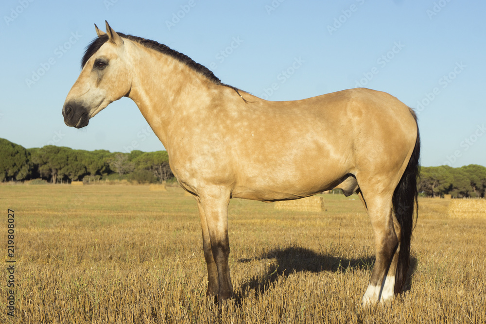

Pelajes
Alazan
Generalmente presentan ojos castaños, aunque los alazanes de con manchas blancas que cubren los parpados pueden mostrar ojos azules. presenta una capa alazana o colorada que es posible ver en varios tonos de rojizo, desde canela hasta pardo rojizo. En las crines y cola presenta colores rojizos o rubios con tonos blancos, pero nunca en negro
Bayo
Son caballos con un color blanco amarillento, aunque puede presentar crines y colas de color blanco o negro
Lobuno
Es grisaceo de lomo, mas claro en verijas y en el hocico, y negro en la cara, crines, cola y remos. En invierno el pelajes es mas oscuro en los extremos de los pelos que en la raiz.
Moro
Es un caballo que presenta un color oscuro que encanece con la edad, pero siempre preserva el color original en la cabeza, miembros y cola
Tordillo
Presenta pelo de cualquier color encanecido, comunmente grisaceo con manchas blancas, puede presentar mezcla de pelos blancos y negros y segun cual prevalezca se lo denomima tordillo blanco o negro.
Zaino
Presenta un color castaño oscuro en el lomo, algo mas claron en las verijas y en el hocico. en la cara, crines, cola y remos presenta un color negro. El pelaje en invierno se oscurece a un negro suave. Una caracteristica de este pelaje es que nunca presenta colores blancos